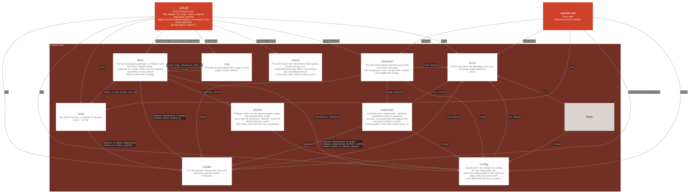

asbuilt / asbuilt-coreasbuilt-core
library crate · crates/asbuilt-core
The language-agnostic core of asbuilt.

Modules
check asbuilt_core.check
crates/asbuilt-core/src/check.rs
The drift check: the committed model against a fresh survey, as a
unified diff when they differ. Line endings are normalized first so
a consumer with autocrlf gets a clean check.
Used by
config asbuilt_core.config
crates/asbuilt-core/src/config.rs
asbuilt.toml: the output path, the externals nothing static in the
code can state, and every front-end's own table kept raw for it to
parse.
Uses
Used by
docs asbuilt_core.docs
crates/asbuilt-core/src/docs.rs
The documentation generator: a [Model] and the SVGs asbuilt render
produced, to a static HTML tree that mounts anywhere.
Uses
Used by
emit asbuilt_core.emit
crates/asbuilt-core/src/emit.rs
The LikeC4 emitter: a [Model] to the text of one .c4 file.
Uses
Kind Target Items Technology
calls asbuilt_core.model Element, ElementKind, Id, Model, RelationKind, sanitize_id, sanitize_segment
Used by
externals asbuilt_core.externals
crates/asbuilt-core/src/externals.rs
Externals from asbuilt.toml: elements outside the code (a spawned
process, a browser) and the edges from surveyed modules to them.
Nothing static in the code states these, so the config does, and a
from that names no element is an error rather than a missing edge.
Uses
Used by
frontend asbuilt_core.frontend
crates/asbuilt-core/src/frontend.rs
The front-end contract and the survey that runs every front-end
that recognizes a root, merges their models, and applies the config.
Uses
Used by
model asbuilt_core.model
crates/asbuilt-core/src/model.rs
The architecture model every front-end produces and the emitter
consumes.
Uses
Used by
Kind Source Items Technology
names asbuilt.commands Model constructs asbuilt.tests Element, ElementKind, Id, Model, Relation, RelationKind calls asbuilt_core.docs Element, ElementKind, Id, Model, Relation, dotted, sanitize_id calls asbuilt_core.emit Element, ElementKind, Id, Model, RelationKind, sanitize_id, sanitize_segment constructs asbuilt_core.externals Element, ElementKind, Id, Model, Relation, RelationKind, dotted, sanitize_id, sanitize_segment constructs asbuilt_core.frontend Model constructs asbuilt_rust Element, ElementKind, Id, Model constructs asbuilt_rust.aggregate Id, Relation, RelationKind, is_lineal names asbuilt_rust.tests Element, Model, Relation, RelationKind names asbuilt_rust.visit RelationKind